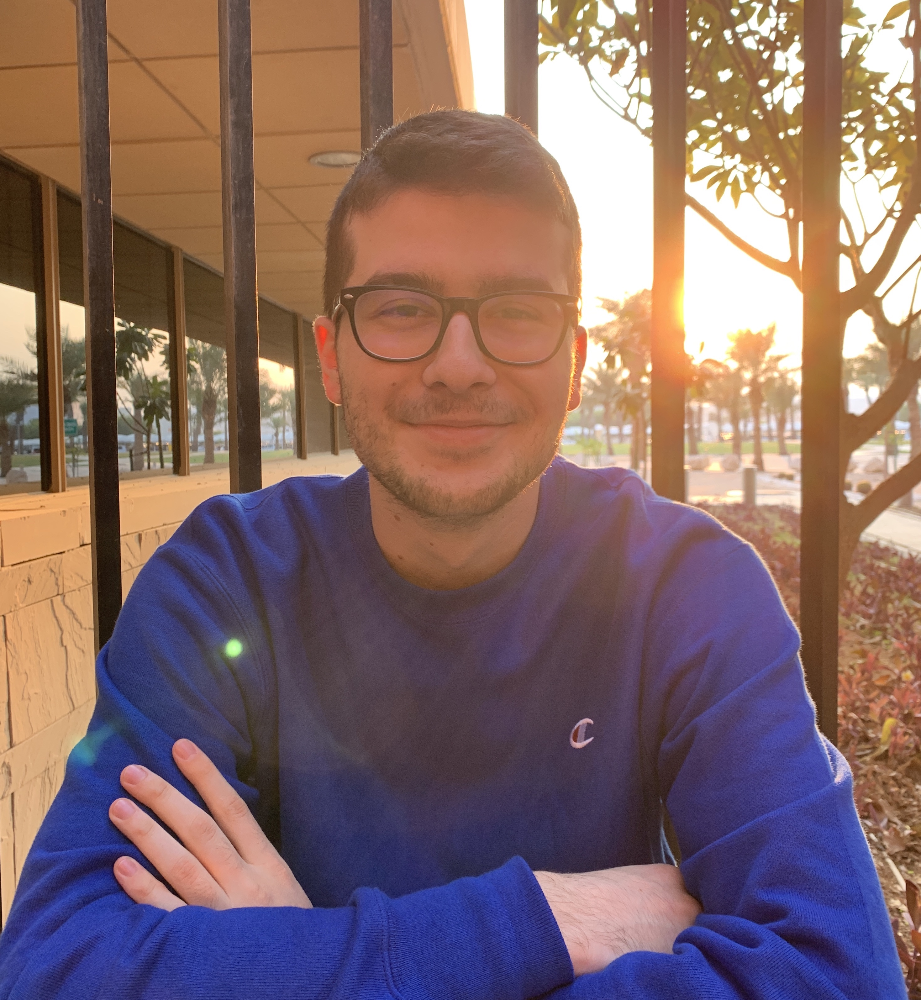
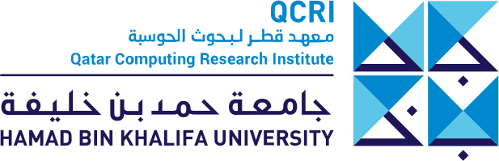

Affiliation
2022-present

2018-2022

About me
I am a research assistant in the Cyber Security Research Group at the Qatar Computing Research Institute. I received my BSc in Computer Science from Carnegie Mellon University.
My research interests include Trojan backdoor attacks and defenses, robust machine learning, federated learning, and the ethics of AI.
Honors and Awards
- Andrew Carnegie Society Scholar Award
- Outstanding Academic Achievement Award (1st in class)
- Allen Newell Award for Excellence in Undergraduate Research (Runner-up)
- Best Project Award at Meeting of the Minds Research Symposium (2nd place)
- Best Project Award at Meeting of the Minds Research Symposium (3rd place)
- Qatar Campus Scholar Award
Conference Activities
Publications
- FedTeams: Towards Trust-Based and Resource-Aware Federated Learning,
Dorde Popovic, Hend K. Gedawy and Khaled A. Harras
In IEEE International Conference on Cloud Computing Technology and Science (CloudCom 2022)